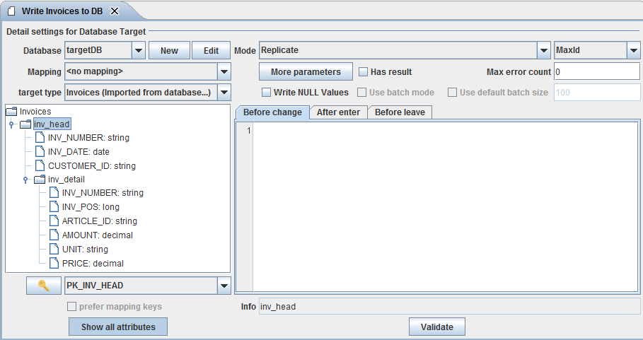

Database Target

Topic content
Description
A Database Target channel is an adapter to change database contents.
The channel has two basic modes:
•It can write a structured Message directly to the database, where each complex element of the message represents a record to be written to the database.
•It can implicitly perform a Orchestra mapping during its execution, whose result elements are written directly into the database while the result is created.
|
Note: The target data type must be imported directly from a Database Dictionary or from a Valuemation repository! Otherwise the channel doesn't know the names of the target tables and columns. |
A simple example
Assume we have two database tables containing information about invoices. First we have a table INV_HEAD representing the invoice and a table INV_DETAIL representing an invoice item. If we import the two tables as a message type from the database it looks like:

Message type imported from a database
As you can see, the message type contains additional information, like the columnname. This information is used from the Database Target channel to create SQL statements.
If you configure the Database Target channel with this type it looks like:

If the channel is invoked with a message of the given type, it traverses the elements of the message and for each invoice it encounters, a record is written to the database table INV_HEAD and for each invoice item it encounters, a record is written to the table INV_DETAIL. Actually the name of the table is contained in the message type as annotation tablename assigned to the record elements and the names of all columns are added as annotation columnname to each simple attribute. These annotations are added to the message type when it is imported from the database or from Valuemation.
A data record can be written to the database in several modes. For example a record can simply be added to the database table executing an insert statement. In the example above the table INV_HEAD is selected. On the right you see that for this table the mode is selected. For every table the user can select a different mode. means that the record is updated if it exists and inserted into the table if it doesn't exist. to find out if the record exists, the channel either executes an update statement or a select statement. In both cases it needs a key definition to create an appropriate where condition. You have to select such a key in the key field under the type tree. If you click on the button with the key symbol a dialog appears showing the columns of the selected key.
Before and after a record is written to the database a script can be executed. For example you may select additional information or change some other tables procedurally. For Details see Trigger scripts .
A data record can be written to the database in several modes:
•Replicate Insert the record or update it, if it already exists. The channel uses two strategies to find out if a record exists:
▪First update the record and if the update affects no table then perform an insert
▪Select the record, if it is not found perform an insert statement otherwise update the record.
•Insert Insert a record by executing an insert statement
•Update Update a record by executing an update statement
•Insert New Insert a record if it does not exist
•Replicate Changes Insert or update data if values have changed
•Update Changes Update data if values have changed
|
Attention: All modes but the Insert mode, require necessarily a key on the database table. If no key is defined and selected for the table mapping, executing the channel will cause an error, because the channel doesn't know how to identify a record. |
Valuemation specific modes
The modes Replicate changes and Update changes are specific for Valuemation databases. If one of these strategies is selected and in Valuemation for the target table the property Enable audit is enabled, then changed values are logged into the according tables AMT_AUDITEDCHG<bankid>. Changes will be logged only for those columns for which Enable audit is enabled. So logging of changed values is in effect if Enable audit is set for the target table and the required columns.
Another benefit of using these modes is, that updates are only executed, if actually changed data are delivered from the data source. Therefore the table columns USERCHG and DATCHG are changed only if the record was actually changed. To check if data were changed, the channel has to read all row data from the table. Therefore this mode costs more performance than a simple Replicate or Update.
In the DB-Target Channel, a specially designed scripting language for this channel is used. This language is used to define procedures which are executed at certain points while the channel writes data to the database. These procedures are called trigger procedures. There are three types of triggers:
•Before change Executed before a record is written to the database. Also for the root node a before changed trigger may be defined. it is executed once at the beginning of the channel invocation.
•After enter Executed after a record is written to the database but before any dependent records have been written to the database.
•Before leave Executed after a record and all its dependent records have been written to the database.
Operation Order
In the course of writing data records to the database, the DBTarget channel performs a sequence of actions in the following order:
•The Before change trigger will be executed (if available). The trigger can refer to all mapped attributes using the syntax $(attributname)
•A select on a target table will be performed, if the mapping mode is Replicate, Insert new, Replicate changes or Update changes.
•The Attribute Expressions will be evaluated and their values will be assigned to the related attributes. The expressions have access to the mapped attributes as well as to all variables that were set from the Before trigger.
|
Note: Attribute expressions will be evaluated only if the target variable has not yet a value. |
•The generated insert or update statements on the target table will be executed.
•The After enter trigger will be executed (if available).
•child records will be written to the database, recursively invoking this sequence of actions.
•The Before leave trigger will be executed (if available).
Creation
To create a Database target channel follow the steps described in the general description of Channels.
Configuration
The dialog to configure the Database target channel looks like:
Example of a database target channel
Step by Step
The following section explains the properties which are valid for the whole channel.
•Database - Select the appropriate database connection.The database connection has to be created as environment entry (database connection).
•Mapping - Select the desired database mapping. You actually don't need to select a mapping. If a mapping is selected, the message given to the channel must match the source type of the mapping. If no mapping is selected, the message must match the selected target type.
•Target type - Message type created by importing it from the Database. If a mapping was selected it always is the target type of the mapping. Actually in this case this element is not editable.
•Type of key generation - The strategy the function newID (see Functions) has to use when creating a new key. The following values are supported:
▪OracleSequence - Only available for Oracle databases. In the target database schema, a sequence with the name ORCH_SEQUENCE must exist. The next value of the sequence will be used
▪MaxId - The key is generated by taking the maximum value of the column of all records in the table and adding one to it.
▪VMHighestKey - Key generated in the same way as Valuemation.
•More parameters Click on this button to open a panel where...
•Has result - Indicates if the channel has result message. The result message resembles the data written to the database. It also contains additional information.
Specifically key attributes are annotated with the XML attribute isKey, error message from the database are added to the the message (if the RESULT status of the channel invocation is errors), information set by executing RESULTMSG.<category> (see RESULTMSG) are also added to the result message.
•Max error count - If the number of errors set by the statement RESULTMSG is higher than this value, the channel invocation fails with RESULT status errors.
•Write NULL Values If this option is set...
•Use batch mode - Try to use database batch mode to increase performance. The benefit of this method is highly database dependent. The property is selectable only if the channel has no result and the type of key generation is not MaxId. Also this mode is only sensible if there are no select statements interfering the insert or update statements because otherwise no batch of statements can be created and the batch mode will not increase the performance.
•In batch mode normally the default batch size is 100. Actually the value is taken from the the parameter adapter.dbtarget.max.batch.count from the Orchestra environment settings, so it might be different in Orchestra designer and in the Orchestra runtime. If the user has a developer key the maximal batch size is configurable if you deselect the check box Use default batch size.
•In the key field under the type tree you must select a key for the the selected target table. Only in insert mode you don't need a target key, all other nodes need a key to create an appropriate where part for the update or select statements necessary to write the data to the correct record on the database table. If you click on the button with the key symbol a dialog appears showing the columns of the selected key. If a mapping is selected in the select box labeled you can select the check box . If selected the channel prefers the key configured in the according node mapping of the orchestra mapping. In rare cases this may be sensible because two node mappings might refer to the same target node but both define different target keys.
•If the toggle button with the label is selected all attributes of the target message type are shown. If it is not selected only the key fields and the fields having an expression assigned are shown.
The relationship between a message element and a database table is called a table mapping. If you select a table element in the tree on left of the channel editor you can change the properties of the related table mapping:
•Mode - Write mode of the table mapping. See paragraph Working modes for details.
•Before change trigger, After enter trigger and Before leave trigger. See Trigger scripts for details
•Elements of the target data type - These corresponds with the tables and the columns of the target database into which the data is written.
•Target key - Unique identifier of the selected Database Table.
Scripting language
In the DB-Target Channel, a specially designed scripting language for this channel is used. This language is used to define the Trigger scripts which are executed at certain points while the channel writes data to the database.
Language elements
In the following sub chapter, we provide an overview of the language elements in the Database target channel. The Syntax of the language is given in EBNF.
Attribute Expressions
Expressions compute a value which can be assigned to variables or can be used to compose more complex expressions.
Examples:
▪1 + $(count) an add expression. The value of the variable count must be numeric
▪'error occurred: ' + $(name) a string concatenation. The value of the variable name is translated to a string
▪substring((select TYPE from INVOICE where INV_NUM = $(inv_id)), 3) a function call having a select expression and a literal number as parameters.
The formal syntax is described in the following lines:
• ::= AddExpression { "or" AddExpression }
• ::= StringConcatenation | NumericExpression
• ::= PrimaryExpression "+" AddExpression
• ::= MultiplyExpression { "+" MultiplyExpression } | MultiplyExpression "-" MultiplyExpression
• ::= PrimaryExpression { "*" PrimaryExpression }
• ::= "(" Expression ")" | Literal | VariableExpression | FunctionCall | SelectExpression
• ::= "$(" Varname ")" | "$(" "../" Varname ")" | "$(""/" Varname")"
• ::= Name "(" [ Expression { "," Expression } ] ")"
• ::= "select" SQLRest
Values
• ::= NumericLiteral|StringLiteral|BooleanLiteral|"null"|"NULL"
• ::= Digits [ "." Digits]
• ::= "'" char ... "'"
• ::= "true" | "false" | "TRUE" | "FALSE"
Global variables
•$(/dbSchemaname)
The language has some helpful build in functions:
•dateTime now () returns the current java.sql.Timestamp
•date today () returns the date of the current day (internally java.sql.Date)
•date yesterday () returns the date before the current day (internally of type java.sql.Date)
•date toDate (string stringDate, string dateFormat)
Default for dateFormat is 'dd.MM.yyyy'
•date dayBefore (date date, int days?)
Default for days is 1
•string substring (string str, int startIndex, int length?) returns the string starting at startIndex with the given length. The parameter length is optional; if missing the value for length is is set to 256.
•int newID (string tablename, string columnname) create a new unique numeric key for the given table column. The function uses the strategy selected through the respective combo box.
•string newKey (string client, string boname, string attrname) create a unique element name. Only usable with a Valuemation database.
Example : newKey ($(client), 'Item', 'item')
•int strlen(string str) get the length of the string
•string timeToString(time tim, string pattern) format the time according to a string pattern
•string dateToString(date dat, string pattern) format the date according to a string pattern
•string stringToCLOB(string str) mark a string as to be written as CLOB to the database.
Trigger
A script is represented by the element Trigger which actually is a sequence of statements:
•Trigger ::= Block
•Block ::= Statement { ";" Statement }
Statements
Statements execute some action. Typically they set the value of variables or write data to the database.
Examples:
First we show a simple assignment of a select expression to a variable
$(count) = select count(*) from INVOICE where INV_TYPE = 1;
We also can store more than one value in a variable using a select into statement:
$(count) = select INV_TYPE, CREDAT into $(inv_type), $(credat) from INVOICE where INV_NUM = $(inv_id);
The following example shows a condition statement which contains a Result Operation statement.
if not exists INVOICE where INV_NUM = $(inv_id) then RESULTMSG.warning invoicdId 'nod invoice found for ' + $(inv_id) end
For more complex examples see More examples for trigger scripts.
The formal syntax is described in the following lines:
• ::= IfStatement | Assignment | SelectIntoStatement | CountLoop | SelectLoop | SQLStatement | CancelStatement | RollbackStatement | ResultOperation
• ::= "if" Condition "then" Block [ "else" Block ] "end"
• ::= VariableRef "=" Expression
• ::= "$(" Varname ")"
• ::= "select" SQL-Expressionlist "into" VariableRef { "," VariableRef } "from" Tablename [ "where" SQLRest ]
• ::= "for" VariableRef "from" Expression “to” Expression “do” Block “end”
• ::= “loop” "select" SQL-Expressionlist "into" VariableRef { "," VariableRef } “from” SQLRest “do” Block “end”
• ::= Name [ "." Name ]
• ::= "cancel" "operation"
• ::= "rollback" "transaction"
• ::= "RESULTMSG" "." ( "failure" | "error" | "warning" | "info" ) [ Name ] AddExpression
• ::= ( "update" | "insert" | "delete" ) SQLRest
Conditions
• ::= AndCondition { "or" AndCondition }
• ::= PrimaryCondition { "and" PrimaryCondition }
• ::= "(" Condition ")" | "not" Condition | ExistsCondition | EqualCondition | CompareCondition | "is" "canceled"
• ::= "exists" Tablename "where" SQLRest
• ::= AddExpression ( "=" | "!=" | "<>" ) AddExpression
• ::= NumericExpression ( "<" | "<=" | ">" | ">=" ) NumericExpression
Comments
Comments are specified as in Java:
•line comments starts with
•multi-line comments enclosed with
Statements RESULTMSG, cancel operation and rollback transaction
The statement adds information in the return message and affects the output-parameter of the channel call.
may have the values failure, error, warning or info
The return parameter RESULTSTATE of the call returns the highest error value that was set during execution. If for example during the execution of the channel and are called, then the RESULTSTATE of the channel invocation gets the value errors.
RESULTSTATE can get the values failed, errors, warnings or success.
writes the value of the expression in the output message as follows:
If the childname is given, then the is appended as an XML attribute to the corresponding child element of the current node of the result message.
For example the statement RESULTMSG.error size, 'invalid length' adds an XML attribute error to the element <size> . This might look like <size error="invalid length">0</size>.
|
Attention: The parameter childname is only allowed in a Before Trigger. |
If childname is not given, a child element named like the category and the value of the expression is added to the current target node.
For example the statement RESULTMSG.warning 'invalid value' adds an element <warning>invalid value</warning> to the current node of the result message.
The best way to see this is to create a channel and view the result message.
implicitly calls cancel operation.
Note that the channel will continue to execute database operations for subsequent nodes of the source message but not for child records of the current node.
, like the statement rollback transaction, sets the RESULTSTATE to failed and executes a rollback of the whole database transaction.
additionally sets in the channel state the and increases the error counter And of course (like always in ) an information text is added to the result message.
If the statement is called, then a flag is set to ensures that:
•No further scripts (after enter, leave before) are executed for this node and its child nodes. All subsequent statements within the script will still run!
•No database operations for this node and its child nodes are executed.
The statement executes a rollback on the target database.
More examples for trigger scripts
Here we show some more complex examples of trigger scripts:
Example 1 showing conditional statements |
|---|
if $(systemtypeId) = null then RESULTMSG.warning systemtypeId 'no Systype found for' + ' systype [' + $(systype) + ']' + ' and client [' + $(client) + ']'; end
if $(sysperfgrpId) = null then RESULTMSG.failure sysperfgrpId 'no Sysperfgrp found for' + ' sysperfgrpNo [' + $(sysperfgrpNo) + ']' + ' and client [' + $(client) + ']'; /* failure causes rollback transaction */ end |
Example 2 showing database statements |
|---|
$(today) = today();
/* check if a record exists within the relation table */ if not exists AMA_COMPSYSTEM where COMPONENT_ID = $(componentId) and SYSTEM_ID = $(../systemId) and VALIDTO > $(today) then $(yesterday) = yesterday(); /* if the Component is already assigned, set its VALIDTO date */ update AMA_COMPSYSTEM set VALIDTO = $(yesterday), USERCHG = $(USERCHG), DATCHG = $(DATCHG) where COMPONENT_ID = $(componentId) and VALIDTO > $(today);
delete FROM AMA_COMPSYSTEM where COMPONENT_ID = $(componentId) and VALIDTO < VALIDFROM;
/* generate a new id using AMT_HIGHESTKEY */ $(relationId) = newID('AMA_COMPSYSTEM', 'COMPSYSTEM_ID'); $(usuMaxDate) = toDate('01.01.2100');
insert into AMA_COMPSYSTEM (COMPSYSTEM_ID, SYSTEM_ID, COMPONENT_ID, VALIDFROM, VALIDTO, CLIENT, USERCRE, DATCRE, USERCHG, DATCHG) values ($(relationId), $(../systemId), $(componentId), $(today), $(usuMaxDate), $(client), $(USERCRE), $(DATCRE), $(USERCHG), $(DATCHG)); end |
Our last example shows a loop statement.
Example 3 showing a loop statement |
|---|
loop select ITEM_POS, ARTICLE_ID, AMOUNT into $(itemPos), $(articleId), $(amount) from wl_order_pos where ORDER_NR = $(ORDER_NR) do insert into temp_order_pos (order_nr, item_pos, article_id, amount) values ( $(ORDER_NR), $(itemPos), $(articleId), $(amount) );
// RESULTMSG.info 'item: pos = ' + $(itemPos) + ', article = ' + $(articleId) + ', amount = ' + $(amount); end |
Testing the channel
You may test the Database target channel like every other outbound channel.
When the channel is configured the user can test its functionality by clicking on the test symbol in the tool bar of the Designer.
Then a dialog opens showing the events the channel receives or an error message.
See also
You also may use the channels Database BLOB Reader, Database Reader, Database Source Reader and Database Outbound Channel to access a database resources.